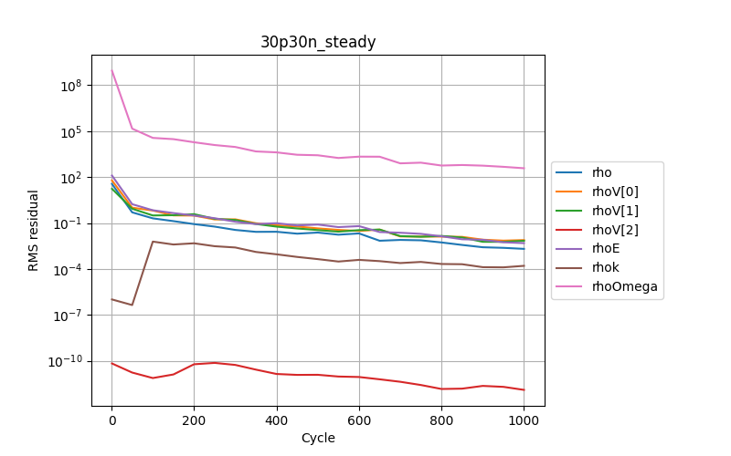

Tutorial 2: Steady State RANS¶
In Tutorial 1, we learnt how to run a case in zCFD and visualise the results. We will now use a more complex test case to showcase some of the features of the solver. The case we will look at is the 30P30N aerofoil, which is a 2D multi element aerofoil, developed as an acoustic benchmark case [1]. The geometry of this case can be seen below:

Initially we will begin by obtaining a steady state RANS solution.
The required meshes and control dictionary can be found here. The case has 64,000 cells, and will run in less than 10 minutes on an NVIDIA RTX 3060 GPU.
This case is run as a steady state simulation, using an implicit time marching scheme. The Reynolds Averaged Navier-Stokes equations are solved using Menter’s SST turbulence model with wall functions.
Control Dictionary Breakdown¶
The setup for this case is very similar to the previous NACA0012 cases, but the control dictionary does feature some extra terms which can be useful for a more streamlined workflow.
Reference variables¶
At the top of the control file, the key variables for the case- Reynolds number, Mach number, temperature etc… are all hard coded, and then referred to later in the script. In cases where you might want to run many simulations with slightly different values to change, this can be an effective way to ensure consistency with variables. Additionally this allows implicit values such as the reference velocity, and freestream Mach to be calculated automatically in the script.
# create variables to assign main experimental parameters
reynolds = 1.71e6
mach = 0.17
T = 295.56
p = 101325
R = 287.6
gamma = 1.4
reference_length = 0.457
alpha = 5.5
# calculate implicit values
rho = p / (R * T)
U = math.sqrt(gamma * R * T) * mach
# assign each mesh zone to a boundary
wall = [6]
symmetry = [4,5]
farfield =[7]
Scale¶
In this case a scaling is applied to convert the size of the mesh. The .h5 mesh file was generated with units of inches, whereas the flow conditions are specified in SI units, therefore a scaling of 0.0254 is applied to convert the mesh into metres. The z (spanwise) direction has been scaled to be 1 metre wide. The mesh has only a single cell in the z direction so no spanwise flow is expected - making the z extent of the mesh 1 metre simply means that the forces and moments reported by zCFD will already be per unit span.
# scale the mesh to match the experimental data
'scale' : [0.0254,0.0254,0.0254/0.127],
Inflow vector¶
In this case we want to simulate the aerofoil operating at an angle of attack of 4 degrees. Rather than rotating the mesh, it is easier to rotate the inflow vector relative to the mesh, an example of a Galilean transformation. The zutil function vector_from_angle() calculates the inflow vector given an x-z angle of attack, x-y angle of attack and flow speed.
'IC_1' : {
'temperature': T,
'pressure': p,
'V': {
# calculate the inflow vector based on the angle of attack
'vector' : zutil.vector_from_angle(0.0,alpha,U),
},
'Reynolds No' : reynolds,
'Reference Length' : reference_length,
'turbulence intensity': 0.01,
'eddy viscosity ratio': 0.1,
'ambient turbulence intensity': 1e-20,
'ambient eddy viscosity ratio': 1e-20,
},
Transform¶
The lift and drag forces acting on a body are defined relative to the freestream flow, lift normal and drag parallel. In this case, where we have rotated the relative inflow vector to a specific angle of attack, it is also useful to rotate the force report by the same vector. The transformed forces will appear as Ft_ terms in the report file.
# define a function to rotate the output forces by the angle of attack
def my_transform(x,y,z):
v = [x,y,z]
v = zutil.rotate_vector(v,0.0,alpha)
return {'v1' : v[0], 'v2' : v[1], 'v3' : v[2]}
Running the case¶
You can run the case as you did for Tutorial 1, but with the following run_zcfd command:
run_zcfd -m 30p30n_coarse.h5 -c 30p30n_steady.py
Monitoring convergence¶
Start by launching a Jupyter server to examine the residuals in the 30p30n_steady_report.csv file. Running the first cell from the 30p30n_steady_report.ipynb notebook will plot the residuals for the continuity, momentum, and energy equations, as well as the residuals from the turbulence model.
If the case is still running you can update the plot by rerunning the cell, this provides a way to monitor the progress of a running simulation.
You will notice that case is set to run for 1000 cycles but looking at the plots, it looks like the residuals are still converging. So we will now restart the solver from where we finished and run on for another 1000 cycles.
Performing a restart¶
To restart the solver we need to update the ‘restart’ parameter in the control dictionary. If this is set to False the solver will always perform a fresh start, if it is True then a results file will be read in and the solve will start based on the data in that file. To enable the restart edit 30p30n_steady.py and change restart to True. You will also need to update ‘cycles’ to 2000.
"restart": True,
'time marching' : {
...
'cycles' : 2000,
...
}
By default zCFD will look for a results file with the same name as the current case file, appended with ‘_results.h5’. So in our case it will look for “30p30n_steady_results.h5”. When you have edited the control dictionary go ahead and restart the simulation again using the same run_zcfd command:
run_zcfd -m 30p30n_coarse.h5 -c 30p30n_steady.py
Once the solver has finished rerun the cell in the notebook to examine the residuals again. The residuals now look like they have converged:
Plotting force convergence¶
Examining the force convergence history next, we are interested in the x and y forces, but transformed by the inflow vector, therefore the wall_Ftx and wall_Fty plots are of interest.


Which show reasonable agreement with experimental results, and additionally that the forces are at least nearing convergence. The grid for this case is still extremely coarse, accounting for the differences in lift and drag coefficients.
Paraview¶
Opening Paraview, and loading in the 30p30n_steady_wall.pvd results will allow you to view the aerofoil surface results:

To get a continuous plot of cp against x/c you need to use a plot over sorted lines filter. To do this:
On the surface data apply a ‘cell data to point data’ filter.
On the cell data to point data apply a ‘slice’ filter, ensuring the slice uses a z normal, and is centred through the middle of the aerofoil
On the slice data apply a ‘plot on sorted lines’ filter and click apply. This will then bring up a new ‘line graph’ view.
Make sure to select all 3 segments in the composite data set dialogue box, then ensure only the cp variables are selected in the series parameters. Finally for the X Array name, select ‘Points_X’
Modify the style and markers until you are happy with the result.

Citations¶
Zhang, Yufei & Chen, Haixin & Wang, Kan & Wang, Meng. (2017). Aeroacoustic Prediction of a Multi-Element Airfoil Using Wall-Modeled Large-Eddy Simulation. AIAA Journal. 55. 1-15. 10.2514/1.J055853.

{kind=link}
{kind=link}